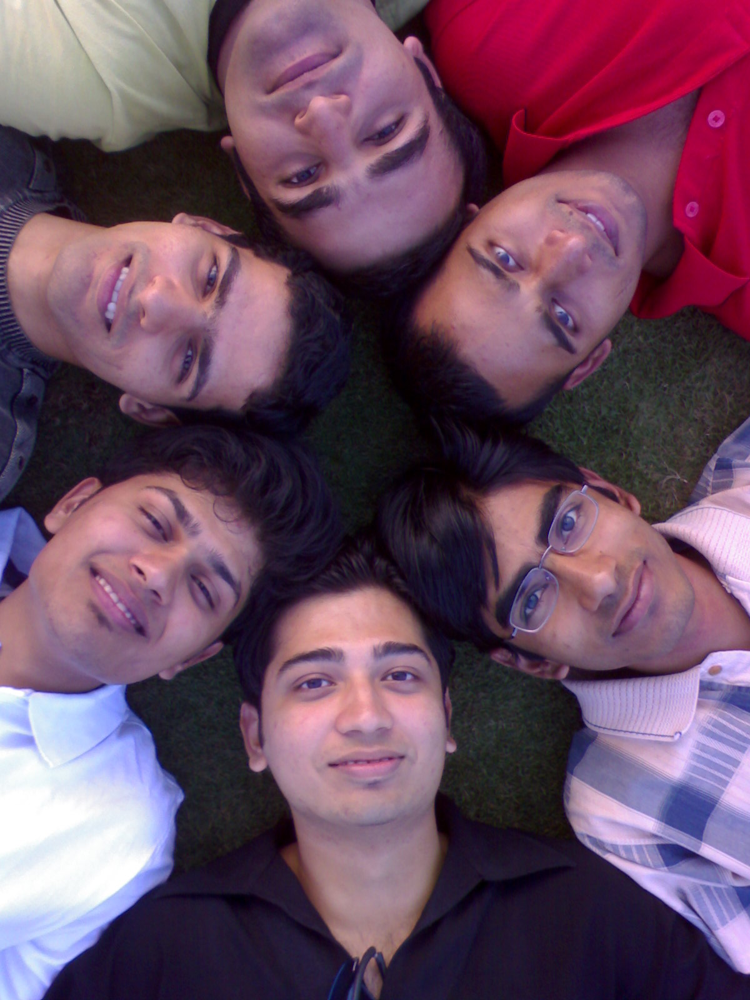
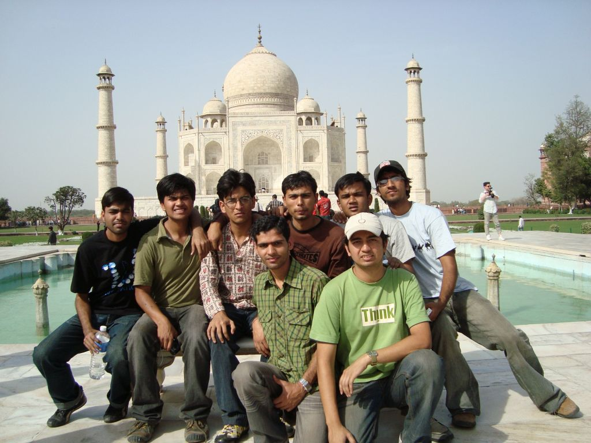

The Yearbook - Commemorating 2005-09!
Sambhav Jain's profile information
Name - Sambhav JainBirthday - 4th May
Email - samgog@gmail.com
Address - 44,Industrial Estate, Nunhai, Agra 282006
Phone - (0562) 2280922
Webpage - Link
Hobbies - music,BC,designing,playing cards-TT-BB-VB-CS
WishList - world tour with friends !!
Memorabilia - Summer 07
What would you want to be remembered as - GenX
Future Plans - Masters
Testimonials written to Sambhav Jain
Sambhav Jain's Album

{kind=link}
Yaari - Forever

{kind=link}
Gonna Shine Forever !!!

poora Gang !!!
Testimonials
For Manish SharmaMakka aka Mux dulla ... is bande ka first impression kuch alag hi tha ... mujhe lagta tha ye bada hi khatarnaak banda hai ... hamesha aankhein laal rehti hain .... pata nahi kab pakad kar maar peet de ... par ye to bilkul ulta nikala ...
Iska CZ em starnge nick "TERI_MAUT" to mein kabhi nahi bhool paaonga ... bahut masti ki hai ...
DumbC me iski acting dekhne laayak hoti hai ... It doesn't matter ki wheather he is able to enact the movie correctly or not but his expressions are so ultimate that one could hardly help laughing ...
He should be awarded as the Portal Mastro of our batch ... be it placement,Year/Jr book ... he is the guy to catch ...
Placement me iski assistance was really helpful as no other person would have taken the pain for the work in those tense conditions ...
Kudos to Mux ... all the best for MS
-Sambhav
For Kapil Bajaj
"Frustuuon ke sardaar, KBC ki tarah mashoor hain aaj !!
bedhadak maari jaati hai inki , aur kehlate hain Bajaj !!!"
For Ankush Kalkote
"madmast haati chaal hai inki, hansi kabhi nahi khote !!
ye marathi maanush beech humaare kehlaate 'mote Kalkote' !!!"
For Kapil Agrawal
Bada Bhai as he has been recently Nicked
 ... is known for his sophesticstion and gentleman personna ...
... is known for his sophesticstion and gentleman personna ...
Our acquaintance has been from old Kota days
 .. thanx to Viman and Asit ...
.. thanx to Viman and Asit ...
I was really praying hard that he should also get IIITH in the Councelling ... and I was lucky to have him as the room partner ...
Things really worked smooth with us ... he use to keep the room so clean
 ... aur ek mein tha ... totally messed up .. one could easily see the contrast at the first sight in the room
... aur ek mein tha ... totally messed up .. one could easily see the contrast at the first sight in the room  ...
...
Ek baar bechare ko yoga me proxy ke challar me fasaan diya tha
 .. srry again yaar for that !!!
.. srry again yaar for that !!!
I still remember how Bansi-Rishi isko dophar me sone nahi dete the aur iske bed par jame rehte the
...
Our first year outings was the best period in IIIT ...
His Royal Protocols of Doing things is specially seeked by people
 ... specially Chacha
... specially Chacha
In all he is the Gentleman of our batch
For Kulbir Saini
Part1
"Ek-ek ki maari isne,koi na isse bacha!!
single pasli ka terror hai aur naam hai iska Chacha!!!"
My biggest achievement in IIIT
 ... srry IIIT-H ... is giving him the nick CHACHA ...
... srry IIIT-H ... is giving him the nick CHACHA ...
The heights he has reached since he has landed in this institute is greatest in Magnitude
 ... kisne socha tha ki dedh pasli ka ye skeleton ek din talk of the town hoga !!!
... kisne socha tha ki dedh pasli ka ye skeleton ek din talk of the town hoga !!!
GHEB me hone ke kaaran humaari jaan pehchaan kuch baad me hi hui ... isse pehle mere dimaag me kulbir ek "Bomb Sqad" ki laal T pehne hue jhola latkaaye ek patla sa ladka hi tha
...
Then he moved to the Heaven, The CELLAR
, and from there I began to know him ... aksar raat ko mein iske kamre pe jaakaar yunhi fokat bakar karta tha ... kabhi mujhe lagta tha ki ye kya sochta hoga mere baare me  ... b'coz Linux etc ke maamle me apna haath tang hi tha ... linux ki chhoti se lekar badi saari samsya ka samaadhan isi ne kiya hai ... God knows iske bina kaise kaam chalega ...
... b'coz Linux etc ke maamle me apna haath tang hi tha ... linux ki chhoti se lekar badi saari samsya ka samaadhan isi ne kiya hai ... God knows iske bina kaise kaam chalega ...
Fir aaya wo din jab Chacha ne apni umar 10 saal ghtaa li
... bole to isne apni muchein mundwa lein ... now he is like the kid jinka pehle ye baap lagta tha  ...
...
His fondness for paneer is beyond imagination
... paneer tikke ke baad paneer kulche ke saath paneer ki sabji aur iska bas chale to sweetdish bhi paneer se bani le ...
Yahi nahi he knows only one destination in town where he can reach without any assistance ... thats Mc D
... kabhi bhi kahin bhi ... kai baar to ye back to back Mc D ke chakkarlaga chuka hai ...
Our relation took a different turn when we moved to OBH
... now he is the guy next door ...
Ek taraf se Haryaana
aur ek taraf se Bihaar ka inductive effect, aisa laga hai ki UP ke bhiyon waali property to mein kho hi chuka hoon ... seedhi saadi hindi me ab punjaabi aur bihaari touch aa gaya hai ... thanx to my neighbours
Cont...
For Kulbir Saini
Part2
Aadmi ko yadi zehar bhi do to thode din me wo use meetha lagne lagta hai ... kuch aisa hi mere saath bhi hua hai ... Haryaanvi aur Punjaabi gaanon ki aisi "High Doze" ghutti pilaayi hai isne ki ab to jab tak 8-10 na sun loon to aisa lagta hai ki din adhoora hai
... "Mitra ne daroo pili" , "Hiro Honda" are the first favorites ...
Raat ko bahut night outs maare hain humne ... neeche chabootre waale open area pe chai/coffee peete hue bahut future ki baatein ki hain
...
Isne aur dulle ne milkar bahut maje liye hain mere ... bechaara mein
 ... iski maarne ki kala ke aage to sab sir jhukaate hain fir mein to tinke ke barabar hoon .. infact tinka hi hoon ...
... iski maarne ki kala ke aage to sab sir jhukaate hain fir mein to tinke ke barabar hoon .. infact tinka hi hoon ...
One thing I know ki bahar se ye bhale hi keh de ki "How does it matter" but from inside "it does matter him" ... Chacha bahut nautanki hai ... kabhi apna soft face nahi dikhaata ...
Coffee shop to bhai iske adda hai
... we even speculate ki shaayad commission bhi milta ho isko wahan se ... 4 saal jitna time humne class me nahi bitaaya use jyada Cofee Shop pe bitaaya hai ...
Afwaah failaane me ... sensational news create karne me chacha ka jawaab nahi
 ... infact Golden Rule hai : If Saini Bros. are the source then treat the news as a just framed statement ... but fir bhi log shikaar ho jaate hain
... infact Golden Rule hai : If Saini Bros. are the source then treat the news as a just framed statement ... but fir bhi log shikaar ho jaate hain
Thank to Chacha's Drupal
... kai courses paar laga diyen hain ...
Ladies Department me chacha ka haat tanga raha hai
... humne apni taraf se poori koshish ki, ki yahin chachi dhoond de ... in fact kuch dhoondi bhi wo bhi free saale ke saath ... par baat BYE-BYE se aage badhi hi nahi
Chacah ke gadgets bade hi upyogi saabit hue hain
.. be it Chacha ka Camera ... uski LCD screen jispar chache ne kai HD movies dikhaayin hai ... be it uska doosra khataarawaala PC ...
Cont...
For Kulbir Saini
Part3
Placement ke time he used to pretend ki jaise ise koi farak nahi padta ... but I know ki ise bhi utni hi tension hai jitni KK ko aajkal apne offer letter ki hai
... I was so overwhelmed when I came to know ki Saini Bros. ne Airvana me jagah bana li hai ...
Chache ne jitni bhi maari ho aur kitna hi sataaya ho but isse bichadne ka bahut dukh hoga
...
really gonna miss you Chache !!!
-Sambhav
For Alok Kumar Gautam
Part1
"Bold Bihaari se bhai ,bhoolkar bhi ab tum na lena Panga
aajkal bahut khatarnaak ho gaya hai, wo seedha-saada Ganja"
Humaare padosi hain be it Bihar or 119
...
Inse first acquaintance humaari Cellar me hui
.. janaab ki laal Ferrai kho gayi thi ..ta ke waste mail kiye the ... I guess wo humaare batch ki first tullu mail thi ...
C9 was the bakar zone those days
... and after Pankaj has bought Laptop jamaawda wahin laga rehta tha ... Humaare seedhe saadhe ...
Mehnat ke baare me iska to bhai kya kehna
... pel ke padhaai karta tha .. aur bahut hi sincere rehta tha ... normal days ki baat to door but hadd to tab paar ho gayi thi jab Felicity ke din bhi janaab Algo ki book liye room par band the ...
His greatest quality is his helping nature
... specially padhaane me ... fir wo chahe 4 ptr ho 9 ptr ... ye kabhi farak nahi karta hai ... infact jin logon ko padhaana namumkin hai unko bhi poore effort ke saaath padhaata hai ...
I owe this person a lot in terms of grades ... isne bahut padhaaya hai
... kai baar to aisa bhi hua ki guruji se jyada achha grade mera aa gaya ... par fir bhi niswaarth bhaawna ke saath padhaana jaari rakha ...
Mein ise bahut bolta tha ki bhai tu extra curricular me part le ... kuch organise kar ... aur us time ye bahut josh me bhi aa jaata aur iska usual dilogue hua karta tha "Agli baar jo bhi ho mujhe jaroor bataana" ... but raat gayi baat gayi
... agle time fir back to square one ...
Taang to hum logon ne iski bahut khennchi hai
... fir wo chahe bandi  ki baat ho yaa iski zulfon ki
ki baat ho yaa iski zulfon ki  ... jald hi heights bhi reach ho gayin thi
... jald hi heights bhi reach ho gayin thi  ...
...
He used to always make remark ki " yaar bas ek baar placement ho jaaye fir bahut laundiyabaazi karunga " but I wasn't serious about his statement because bhai Gau ki tarah seedhe hain ... kahin se Bihaari look aata hi nahi hai ...
Cont...
For Alok Kumar Gautam
Part2
Placement ke time bhi inhoone pel ke padhaai ki as usual and jaisi condition chal rahi thi frustation hi haath lag rahi thi
... fir ek din inki kismat ka taara palta aur uske baad jaise ye alok wo alok nahi raha ...
Sonus me kya hua ... bande ne jo Placement me haath bantaaya hai ki bhai hum logon ki chhodo Mr. Gentleman bhi inse bahut prasann rehte the aur kai baar iski maturity ki tareef bhi ki hai
... lot of people promised to work after they being placed .. kuch logon me josh bhi raha par he and Karan were the only two jinhone dil se placement ke liye kaam kiya ...
Fir to jaise sab badal gaya ... "padhaai paraayi ho gayi"
... aur to aur jo log maara karte the wo darne lage ... pata nahi bande ka sadiyon se soya hua sense of humor na jaane kahan se jaag utha ... but now he leads th BC aur chacha tak ki bolti band kar deta hai ...
Rahi ladies department ki baat
to ye pragati par hain aur humse kai guna aage nikal chuke hain ... he is prooving his statement right ...
bole to Bold Bihaari ne apna sikka jaate jaate aisa jamaaya hai ki batch ke Stud bhi fail ho gaye
...
Kudos to you dude
...
-Sambhav
For Pankaj Saini
Part1
"ladkiyon ke maamle me ye samajhte hain, ki koi nahi hai inse achha !!
dost log isse apni fantiyaan bachaaiyen, kyunki ye hai God Ka Bachha !!!"
I don't remember ki humaari pehli mulakaat kaise hui thi
... oldest moment I could remember is ki iske room pe baithe mein, sachin aur ye BC kar rahe the ... some PEC related topic ... C9 was the official bakar room ... and I was a frequent visitor there ...
He was the first one to get the Laptop .. fir to kya movie chalti hi rehti thi iske room par jab bhi time mile ... any one is most welcome ...
It was after the first year .. we were frequently involved in "BCs about bandiS
" aur na jaane kitne hi night outs humne apni future life discuss karne me nilkaali hongi ...
The most memorable moment was witnessing his expression when found some girl (his Nth love
) on orkut ... fir to kya tha iski frequency double ho gayi , blog likhne ki ... aur na jaane kitni baar humne iski love story suni ...
But!! the girl wasn't lucky enough ... kuch hi time baad as usual God Ka Baccha usse frusta gaya aur fir Maroo wale 2 magical words bol diye ...
Ye kissa khatam hi hua hoga ki fir koi nayi kahaani shuru ho gayi ... and then it was the routine
...
Then one day someone came with the name "God Ka Bachha" (I guess Mahaveer) and till few days everybody was speculating "who is GKB??" ...and then the so called suspence opened one day ... and he is known as GKB since then
Ek baar jaane kya bhoot chadha tha to ye "baba jatadhaari" ho gaye the ... It was a shock to see Pankaj in a foot long hairs ...
His kiddish nature is an amusement at times
... isko zara sa chadha do kuch bhi kar deta hai ... I remember how he ended up in doing pole dance in MMTS .. ..
He has a great taste for music and we have sung a lot of song together ... "Dholi taro dhol ... " was an awesome experience ... and "Ram chandra keh gaye siya se" to bhai kuch alag hi level ka fun tha ...
Cont...
For Pankaj Saini
Part2
Antakhari and DubC itna khela hai ki saari movies hi khatm ho chuki hain
...
His "Ghode Daudaane waala dancing step" is a patent
... aur kitni hi baar aise hi Chacha ke room me Dance chaaloo ho jaata hai ...
Padhaai likaayi ki taraf inka rujhaan kaafi kam hai fir bhi R & D Engineer ki post hold karte hain
.... how can I forget CORBA ... isne itna achhha padhaaya the ki saare concepts ki amma kar di thi ... khair wo course bhi kuch aisa hai tha ...
Beech me fir isko pyaar-mohabbat ka bukhaar chad kaya tha aur ye room pe band rehne laga tha .. aur BC sessions bunk karne laga tha ...
Current status kuch theek hai ... but aage kisne dekha ,afterall, He is God ka Bachha !!!
Gonna miss you !!
-Sambhav
For Sanket Sharma
"Inke dar jo aaye, khaali haath na jaaye !!
mushkil chahe lambi ho ya choti, daddu se ghabraaye!!!"
Sau marj ki ek dava Daddu THE "CR"
... bhai daddu ko is testimonial me tolna mumkin nahi hai ... par fir bhi ye gutaakhi kar raha hoon ...
Inhone apni kaafi ghisaai hai batch ke liye isme to kisi ko bhi tanik shanka nahi hogi ... I still remember I first saw him in NBH mess and the talk of the table was .. "abe ye wahi hai jisko kal kutton ke peeche daudaaya gaya tha
" ...
But whitin the blink of an eye
he was the most sorted person of the batch ... I think within one year he has proved his worth and thats the simple fact ki fir batch me CR ke liye kabhi koi election ya bahas nahi hui ...
Mein iski "Kaatne Ki Kala" ka bahut bada Fan hoon
... Jo koi nahi kar sakta wo daddu kar sakta hai
I can't forget our Sikkim trip and specially the Namchi
incident ... kyun daddu chalein Naamchi ... it was one of the best trips of my life ...
Iske kisse .. bhai khatam hi nahi hote
... Train etc. me aaju baaju ke logon ka chehra dekhne laayak hota hai ...
Prank karne me iski daringbaazi ki daad deni hogi
... "Bangal band" me jo logon ki Video utaari thi ... laga hi nahi ki hum kahin fasein hue hain ... it was a hell of a fun
Daddu bhai se kaafi management skill sikhi hain .. and being in Placement committee iski working style aur bhi paas se parakhne ka mauka mila hai ...
Pardon me for misunderstanding you at times .. kabhi kabhi log jo bolte hain us par yakeen ho jaata hai ...
Gentleman Market Sharma:
All the best for your MBA
-Sambhav
For Veer Deora
Part1
"Rajputana andaaz inka, Marwaari kehalwana chahte hain !!
par bechari badkismati inki, DULLE ke naam se jaane jaate hain !!!"
If there is some measure to index the characteristics ... you'll find us on the opposite ends .. yet it surprise me ki why have been we so close ??
... leave aside the stats/physics or whatever it is .... the truth is he has been a gr8 friend ...
We were in the same mentor grp under Pranav sir ... and from there started our acquaintance ... ragging ke naam pe iski bahut fate me rehti thi
.. aur meri bhi faad deta tha ... I remember ki kitni baar hum Pranav se apni haalat discuss karne gaye hain ...
then his and Saraswat room was the official Ragging zone
jisme humne ragging dene aur agle saal lene ki be hisaab practice ki .. har raat kisi batch ke kisi badnasseb ka call aata tha ... but planning dhari ki dhari reh gayi ... but that was an awesome time ...
I am a big Fan
of his presence of mind and humor scattering art, since ragging ages ... I praised him zillion times for this for this he has repayed me with a Nick which is now my other identity ...
I regard him as my Sports guru
... he use to urge and inpire me to take part in sports and I'dont know why I feel really confident when I used to be in his team in any game ... its kindaa feeling ki someone is there to clean the mess if I screw ....
Salah dene me inka koi mukaabla nahi hai ... iske kehne pe maine na jaane kitne kaam kar diya jo mere ko nahi karne chahiye the
Ladkiyon ke maamle me inka taste anokha hi hai
... pata nahi kis kis me isko "rab dikh jaata hai" .... aur fir jo bhang pana hota hai usse I guess sabhi waakif hain ...
A self-praiser when it comes to Sirohi-Rajput-Marwaari
... aur inhi baaton par iski sabse jyaada maari jaati hai ...
Cont...
For Veer Deora
Part2
Bhagwaan ne ek (do if you count his birth incident
..) chot kar di iske saath ... bechaare ko Dulla bana diya ... dual me aane ka dukh nahi hai isko jitna ki Dulla kehlaane ka (thanx to Dhingra ) ...
Jab dekho kisi se bhi jhagad leta hai
... ek maheena reh gaya hai pata nahi mera no. kab aa jaaye ...
Really annoying is his subah subah nashte ke liye uthaane ka lehza
... jo chillata hai ... leaves you with no other option but to get up
Summer 07 , was the best time in both ou our lives
... behisaab BC ... behisaab masti ... wo scedule kabhi bhi zindagi me dobaara nahi aayega ... our chitchats on life in the morning on our pet place ... Vindu jaana ... CS ... volleyball .. cricket ... OBH ka naashta ... Somani ki udaana
After moving to OBH isne aur Chacha ne jitni udaayi hai ... only I know ki kaise sahi hai
... bahut mindwash kiya hai alag alag cheezon pe ... .
He'll be the guy jisse door rehne ki salaah log dete hain ... people may judge him however they want... but what matters for me is that he cares for me
!!!
Jaldi MS poori kar aur teri shaadi me mein jarroor aaonga (Sat/Sun me karna
)
-Sambhav
For Rishi Gupta
Part1
"Mode1 me gussa aur Mode2 me khushi !!
Zordaar khiladi hai, naam hai Rishi !!!"
When I first set the foot in the campus, it was a warm feeling
to see a familier face standing in front of NBH ... it was the coooldude ... Rishi ...I thanked god to for increasing my acquaintance count +1 ...
...rest was the "Bansal Factor"
which converted this little acquaintance into deep friendship ... and today while writing this I'm again thanking god...
He,Bansi and GupTha were the frequent visiters to C-12
aur bhai aka Kapil ko bahut tang karte the ... specially dophar me jab sone ka time hota tha to uske bed gher lete the ...
It wasn't late to discover that this guy is equipped with NItro Boosters
... highly charged, very active and agile in all the sports ... he is one of the key ppl because of who I also actively participated in sports ...
Not only sports .. he has always backed me whenever I was in any kind of dillema
... he used to praise me on my achievement and I can always find his face in the audience appreciating me
He has taught a lot of subjects to me
...I owe all my A grades in Mathematics and related subject to him ... very sincere just in class and before exams ... infact exam ke time iska koi aur mode hi chaaloo ho jata hai ... baniyaan aur shorts me rehta hai aur shave nahi karta ... bas padhta rehta hai .. good for us
He is the outing planner specially in the first sem
... weekday ho ya weekend .. shaam ko free hote hi nikal padte the ... first year me jitna Hyderabaad chhaana hai shayad hi kisi aur ne itni tafri ki hogi ...
Cont...
For Rishi Gupta
Part2
He may look casual in approach but when it comes to responsibility ... he is the best guy around .. his work during Felicity'08 , when he was incharge of the Finance, was really commendable
... when we guys were dancing and having fun he used to be busy in collecting money from stall ppl ... even at 3 O clock at night was busy with the accounts ...
He and bansi were the account specialist since the Day 1 ... I can see his one mail in my Inbox reg. some hisaab exchange
...
A very homely guy .. infact agar aaj bhi kisi ko college me jaan pehchaan waale ka no. dena hota hai to I give his contact
... kisi bhi bade jane se ya ghar waalon se baat karte samay iska lehza aur tone bilkul badal jaati hai ... hans-hans ke pet dukh jaata hai when you hear him talking on phone ...
Use to get angry very soon
... par jitani jaldi gussa chadhta hai utni jaldi utarta bhi hai .. isliye advice ki bahasbaazi me isko aage to rakhna .. par sirf iske bharose mat rehna ... kya pata kab back kar jaaye
Will remember you for the cricket,TT,CZ sessions .... night long BC at 3rd Floor ... our outings
Wish you find gr88888 success in life !!!!
-Sambhav
For Nitin
Part1
"Dimaag me khurafaati vichaar aur chehre pe shararti hansi!!
achhe achhon ki been baja de, naam hai inka Bansi !!!"
Looks can be deceptive ... yes yes they really can be ... Bansi ke baare me ye kathan 100 % fit baithta hai ... during our first days in IIIT one could hardly hear his voice
... In our ragging time ... his voice couldn't even cross 3 rooms ... par uske baad !!! bhaai, aisa bola ki sabki bolti band kar di ...
Being the Bansal guy ... I mean from Bansal Classes ... he was quickly gelled to the JHUUND
... and and I can hardly count the outing we have made during the first sem ... being in A4 humaari khoob bakar hoti thi ...
Jald hi the 3rd floor BC ka adda ban gaya and Bansi one of the leading BCbaaz ... one can't stop laughing jab iske one liners start hote hain ... I am a real Fan of his Repartees !!!
... it clearly shows at times how sharp this Haryaanvi brain can be ...
His Expertise area, from the very first day, is bargaining with the auto-waalaS
... and believe me he is GOD in the field ... there are miraculous examples to quote but ppl will find this crazy on my part ... now we are so dependent on him that its a real pain to hire a auto if he's not there ...
jikra ho yadi inki zulfon ka to bas kehna hi kya
... hamesha baalon par haath ferte hue tashan me rehta hai ...
a "Womeniser"
.... always busy on orkut or chat or phone or any other medium (I might not be aware of ) ... his usual reply to avoid is "Tum chalo mein aata hoon" ( = samjha karo yaar !!! tum log jaao mein busy hoon )
football ki deewaangi kuch jyada hi hai
fir wo chahe FIFA ho ya FIFA'08(Comp Game) ....
"I_AM_HERE", as his nick says you'll always find him on the same place in CS
... but improved a lot since Summer 07 ... now he is no more an easy cake to cut
Cont...
For Nitin
Part2
Bansi is a friend in need ... I still remember the day when I was hurt badly while playing football and wasn't able to walk properly
.. tab Bansi was the guy jo kandhe pe sahaara dekar mujhe class le jaata tha ... thanx for that dude ... Placement season wasn't rosy for either of us ... but my saddest moment in IIIT was the day when he was not selected in Sonus Network ...
May you always hit the bulls eye in future !!!
-Sambhav
For Sachin
Part1
"Shakal pe sharaarat likhi hai, aur baalon se hai bhoot !!
baat inki anokhi hai ,ye hain keechad kood !!! "
KeechadKood Jr.
... he is a person who everyone wanna be friend with ... his ability to spread fun and frolic is the reason why he is so sort after wheather it be any outing, coffee shop walk or group BC ...
Being in A4 and Cellar hum kaafi jaldi hi contact me aa gaye the and the knot has only tightened since then
... A4 ki English class me hum logon ne bahut bakar ki hai ...
Iska "sha" ko "sa" bolna aur Mrs. Rangnekar ka isko correct karna "Sachin say 'sha' .. say 'sha'.." was a kind of laughing medicine for all of us
...
Waise KK ka command pronunciation pe kuch jyada hi tagda hai fir wo chahe antaksCHadi ho.. ya dudu ..ya fruit chit
... KK ke patent steps includes the waist twist , the jerky hands up , Hey-Baby Dance step ...
Hum kai kaamon me saath rahe hain ... physics presentation .. Shalabh sir ki tute
... jeevan vidya ... infact leave that the heights were jab Rohit Gupta ne so called interactive session ke liye bulaaya tha and the 3 unlucky were he, me and tava ...
Cellar played an important role in our bonding ... after changing his room to C2 he was the guy next door
... half of the time I used to be in his room and the other half in C9 (The 2 bakar zones) ... BC night-outs, DumbC, the cards session , cricket session were the some of the highlights ...
We organised Antakshari during Felicity, participated in the next one
... his GK in songs is superb ... when comes to movies it seems that it is his homeground ... he has a commendable and vast knowledge of movies ..infact its better to call him "walking IMDB" ... if you are playing DumbC having Sachin in your team is a great advantage !!
Cont...
For Sachin
Part2
Janaab ka aalas IIIT ke kone kone me mashoor hai
... KK ko uski jagah se hilaana matlab 'Mahabharat'(but can't beat Somani ) ... aur agar so raha hai tab to ye task "mushkil nahi namumkin hai" ...
A memorable moment was when he played a prank of waking me one night from deep sleep
... and I threatened him of the same when he sleeps ... darr ke maare ye darwaaza khol ke soya ki kahin darwaaza kholne ke liye uthna na pad jaaye !!!
BBall is another area of his expertise
... our house team's Captain (for shoots only ) ... I started playing the game just b'coz of him ... he used to back me even when I wasn't good in the art !!! ...
When it comes to cards specially 29 his legend is unforgettable
... 21-22-23-25-29 ... THE only daringbaaz to go to that extend ...
KK and Vig are the two people jo ki ghomne ke liya hamesha tayaar rehte hein
... Sikkim & Jaipur trip was possible because these two were the initiative takers ...
bande ke cool attitude ka kya kehna !! ... Sikkim ki ladkiyaan
bhi "KK ki Koolness ki Kayal" ho gayi thi ... remember Sudeepa (or Sudeepta) {it took me days to recall the name } ... Namchi incident is one of the most humorous in last 4yrs ...
Coming to one more incident when I convinced the passengers that he is a handicap
just for the sake of the seat in MMTS ...
The best time with him was Summer'07
when we used to spend 18-19 hrs a day together ... used to play CS, VB, cricket ... the BC sessions abt future life ... Vindus me khaane jaana ... really miss those days ...
Cont...
For Sachin
Part3
Banda peeta hai par darta bhi hai ... his usual request "yaar mein peeke out ho jaaon to sambhaal lena" ... ek-do baar isko
... remember the Coffee Machine incident ... and not to go very far ..just 2 days back 'Crying Sachin' was the icon of the party ... aur bhai jo ... infact itni english to isne Marathe mam ki class me bhi nahi bole ...
We did the placement prep together ... he was really focussed and serious ... and put a great effort
... at that time he played the "Serious Sachin" part and it paid ... it was a joyeous moment to see him and Bajaj go off the mark ...
part and it paid ... it was a joyeous moment to see him and Bajaj go off the mark ...
hmmm , going to Banglore ... good for me as I have promised him I'll visit him every weekend
... wheather you like or not .... go ahead with your "Red Swift" plan ... wish you progress so much that you can buy lot of Benz for your friends ...
gonna miss you a lot !!! a lot !!
-Sambhav
For Siva Reddy
It takes lifetime for god to create such persons, modest hardworking and selflessly helpful
The only expression in his dictionary is Smile
... The first encounter to his excellence was during the Graphics assignment evaluation where I was so taken away by his work that I was spectacle whether I have done any thing ?? ... But PJN wasn't lucky enough , this grandmaster landed in LTRC and from there started our acquaintance .
One can always find him in the lab
and even there he is the most seeked person; if he's not there you'll find people asking "where's shiva ?? have you seen siva?? where's he ???".
Enjoyed pulling his leg
,during Winter school by pairing him with visiting female scholars ... and why not??? ... he was mentoring a bunch of them .
Will remember our Lab chit-chats
and giggling .
All the best for your MS !!!
-Sambhav
For Srirang Ranjalkar
It seems that god has gifted this little spirit with extra bit of Adrenalin
, highly charged, extremely pumped up ....
Ya it has to be DJ Ranga
... his extreme dedication for BC has made him famous in almost all the prevailing corners of the batch ....
When it comes to singing ..well "naam hi kaafi hai"
... trip ho ya collective BC this guy is a mood setter ...
I have some great memories with the little master ... Antakshari, group singing, Batch Trip, P-band
are few I can mention for now ...
This quad-lingual guy is perfect for any trans-cultural aspect
... during placements Ranga was the guy to catch ... he has given great assistance at times .
I'am sure wherever you go in life you'll find a lot of friends ... do remember some of the old ones ... may you reach great heights in life !!
Gonna miss ya !!!
-Sambhav
For Deepak Vig
Part1
"chaal dekh kar jaan jaaoge , aa raha hai kaun!!
dhaai kilo ka dhaancha, bhai ye hai Viglu Vodafone !!!"
Viglu Vodafone
... that's the nomenclature given after he managed to beg a red Vodafone T at last IPL ... OR chaddi for his popular shorts ... OR pseudo Sardaar for being Punjaabi by Nature ...
he is a silent type guy and has "koi gal nahi , sab vadiya hai ji"
attitude... our acquaintance is from old Kota days ... at that time he was THE most sincere guy in my group who used to pen down even a trifle solution neatly on A4 sheet ... he has continued his dedication even here and has conquered every terrain of Web Technologies ...
but IIIT has seen his other side
where he has nourished the cook inside him and catered the need of dozens under the roof known as "Viglu da Dhaba" .... ande hoon ya dodh vigla sab deta hai ...
He and KK are two people who share the same Passion for planning and executing trips just like me
...we had amazing trips together to Sikkim,Jaipur-VaishnoDevi etc ... I still remember ki kaise Viglu ne Sikkim trip ke dauraan Naamchi naam ka chauka maar kar kaise Daddu ka kaata tha .... that showed how daringzbaaj is the guy when it comes to girls ... college ki kai Vigliyon par inka crush hai ...
Talking about sports Viglu ka "jhaadoo shot" will be remembered for ages ... he has shown some commendable game while playing Volley Ball
....
witnessed golden time during Summer07, jab ye sabki maarne ke aur expert comments ke liye bahucharchit tha
...but soon put on hold by other mightier players ...
Campus Treasure Hunt in Sunday Carnival and then in Felicity was his baby
... we had an awesome time during these events ... forming clues, planting them and then seeing whole world running crazy behind them was fun ....
cont...
For Deepak Vig
Part2
The extreme of leg-pulling
he has faced is during "aisaPaisa" time when even the most vulnerable ones used to tease him ... I remember his frustration reached peak at that time ... ultimately good God showed some mercy on him and we had a treat ...still don't know ki paise milne ki di thi ya peecha chhootne ki ....
placement time wasn't rosey for us
... we planned some alternate measures(thanx to chacha and dulla for the mindwash)... finally he managed a descent Job ... but its just the beginning ... Wish you reach great heights in life ...
-Sambhav
For Atul Dwivedi
Part1
"Reva me thi shaan inki, sadiyon se bhi puraani !!
ek film relese kya hui, ab sab kehte hain 'Chhaddami'!!!"
People have many dreams ; only few are able to achieve a few of them but there are only handful who turn their every dream into reality, no matter how adverse the conditions are.. and dude is one of this class
... Coming forth from zero level he has mastered in so many fields even he couldn't have imagined it before ... be it Guitar & Singing, be it Basket Ball, be it English speaking, be it Acads .. the list is long ... people have discouraged him , made fun of him , laughed at him but this enthusiastic gun has proven each one wrong ... his "who dares win" attitude is an inspiration for me ...
waise Dood se humra vaasta tanik puraana hai ... Aaj bhi inka 1 x 1.5 foot ka autograph humaari copy ki shobha badha raha hai
... gaane-bajaane ke rehte inse humaari pehli mulaakat hui thi ... banda dholak gajab bajaata hai ... kuch performances me hum inke saath the , jaise ki Kalaam ji waale time , bahut appreciate kiya gaya tha inka bjaana Zulu sir dwaara .. banda music ke liye senti hai ... he even discussed an alternate career in Music one day ... go ahead dude I'll be more than happy if you'll be successful ...
GHEB me hone ke kaaran ye jara alag hi rehte the ... Par fir kuch aisa ghatit hua jisne inki saari zindagi palat di
... aur wo tha Dude ka NBH aana ... GHEB ka sher  , jo sabki maarta tha, seena chauda karke pahunche but NBH 3rd floor par inka swagat kuch alag hi dhang se hua .. inhe apna ragging time yaad aa gaya ... fir wo chahe Rewa ho ya Rewa ke sher, ya Rewa ka National Anthem ... dude jo bole wahin daboch liya jaata tha ... I remember ki kaise ise nange pair tenu ke saath race karaayi gayi thi ... in short iski frustration charam seema par pahunch gayi thi ... but the rule is true "jo jitni karaari ragging deta hai utna hi favourite hota hai" ...and that one can see today ..
, jo sabki maarta tha, seena chauda karke pahunche but NBH 3rd floor par inka swagat kuch alag hi dhang se hua .. inhe apna ragging time yaad aa gaya ... fir wo chahe Rewa ho ya Rewa ke sher, ya Rewa ka National Anthem ... dude jo bole wahin daboch liya jaata tha ... I remember ki kaise ise nange pair tenu ke saath race karaayi gayi thi ... in short iski frustration charam seema par pahunch gayi thi ... but the rule is true "jo jitni karaari ragging deta hai utna hi favourite hota hai" ...and that one can see today ..
cont.
For Atul Dwivedi
Part2
Bande me ek aur bahut badi khoobi hai ... banda ka ladkiyon se baat karne ka andaaz bada hi umda hai
... batch ki saari ladkiyaan (except few lucky ones ) dude ki is kala se ... after all dude is dudewa ...
Agar aapke room ke bahar se shirt gayab hui hai
... to aap jante hi hain ki wo kahan gayi hogi aur uske aane ki ummeed chhod dijiye ... banda CZ bada hi awesome khelta hai... infact ladaayi hoti hai ki Rock ko mein maroonga
Ek cheez yaar adhoori hi reh gayi
.. planned ki tumhaare saath gaane compose karenge .. but planning, planning hi rah gayi ...
Chalte chalte just few tip ... apne gusse
pe lagaam chadhaaye ... you are vulnerable because you get angry so soon ... aur dude jara ab ye dehati style ko gentleman style me tabdeel kar lo ... ab tum chote gaanv se badi company me jaa rahe ho ... definitely will remember you for some unforgettable moments Aalochaat , last days BC , RishiUtsav ... may you cross all the milestones you long for !!!
Phone karte rahiyega !!
- Sambhav